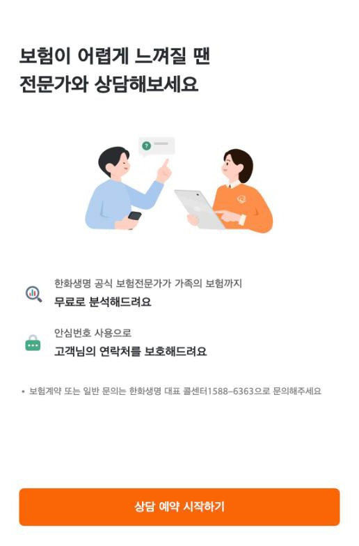
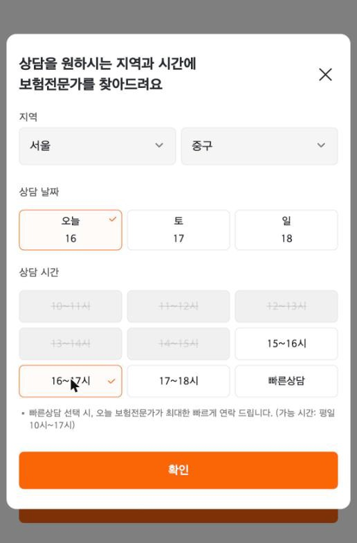
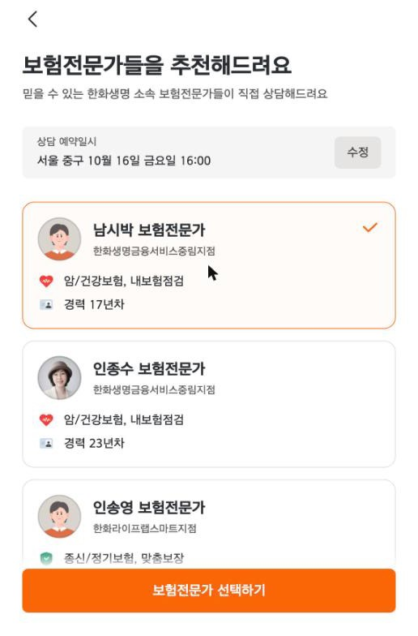
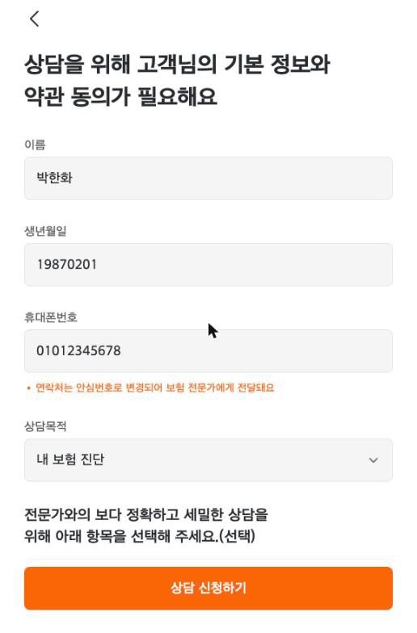
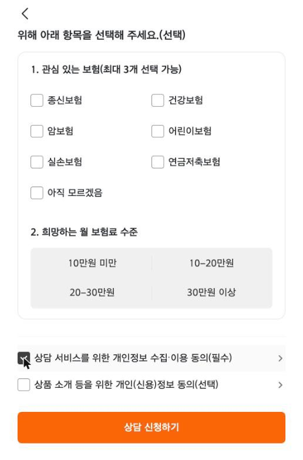
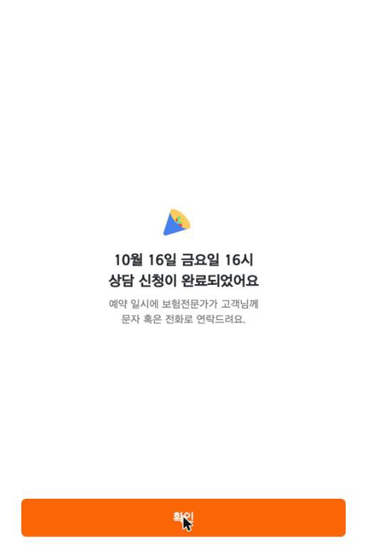

화면으로 보는 상담 신청 흐름
상담 예약 시작부터 신청 완료까지의 여섯 단계입니다.






스테이징 환경의 테스트 데이터 화면입니다.
01
상담 신청 흐름과 알림톡
개요
프론트·앱 진입점과 검증을 맡는 API 계층, 코어 시스템 연동과 알림톡·푸시를 맡는 연동 계층 두 서비스로 나뉜 구조입니다.
담당 업무
- FP·지점장 알림톡 템플릿 전면 교체 (일반 / 보험명 포함 / 보장분석 동의 + 리마인드 · 지점장 통보)
- 템플릿 변수 치환 공통화
- FP 알림톡 버튼의 대체 이동 경로를 FP 카드로 지정
- 그 밖에 상담 희망시각 검증, 상담 우수 FP 배지 노출 등 신청 화면 기능 개선
주요 성과
템플릿 종류가 늘어나도 변수 치환을 한 곳에서 관리할 수 있게 정리했습니다.
02
D2F 보안 강화
개요
담당 FP에게 바로 상담을 신청하는 D2F 경로에서, 요청 본문의 고객번호를 바꾸면 다른 사람의 휴대폰·계약 정보가 보이는 IDOR 취약점이 보안 점검에서 지적됐습니다.
담당 업무
- 고객 식별을 요청 본문이 아니라 로그인 토큰으로 하는 API로 전환 (조회 요청 본문은 비우고, 상담 요청 본문은 FP·희망 일시·상담 내용만)
- 프론트 배포 후 백엔드에서 구 API 차단
- 담당 FP 유무·소속 등으로 상담 노출 대상 판정
주요 성과
2026.10.19 배포로 취약점을 해소했습니다.